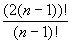

SQL Query Optimization
Basics
Given: A query joining n tables
The "Plan Space": Huge number of alternative, semantically equivalent
plans.
The Perils of Error: Running time of plans can vary by many orders of magnitude
Ideal Goal: Map a declarative query to the most efficient plan tree.
Conventional Wisdom: You’re OK if you avoid the rotten plans.
Industrial State of the art: Most optimizers use System R technique and work
"OK" up to about 10 joins.
Wide variability in handling complex queries with aggregation, subqueries, etc. Wait
for rewrite paper.
Approach 1: The Optimization Oracle
(definitely not to be confused with the company of the same name)
You’d like to get the following information, but in 0 time:
- Consider each possible plan in turn.
- Run it & measure performance.
- The one that was fastest is the keeper.
Approach 2: Make Up a Heuristic & See if it Works
University INGRES
- always use NL-Join (indexed inner whenever possible)
- order relations from smallest to biggest
Oracle 6
- "Syntax-based" optimization
OK,OK. Approach 3: Think!
Three issues:
- define plan space to search
- do cost estimation for plans
- find an efficient algorithm to search through plan space for "cheapest" plan
Selinger & the System R crowd the first to do this right. The Bible of Query
Optimization.
SQL Refresher
SELECT {DISTINCT} <list of columns>
FROM <list of tables>
{WHERE <list of "Boolean Factors" (predicates in CNF)>}
{GROUP BY <list of columns>
{HAVING <list of Boolean Factors>}}
{ORDER BY <list of columns>};
Semantics are:
- take Cartesian product (a/k/a cross-product) of tables in FROM clause, projecting to
only those columns that appear in other clauses
- if there’s a WHERE clause, apply all filters in it
- if there’s a GROUP BY clause, form groups on the result
- if there’s a HAVING clause, filter groups with it
- if there’s an ORDER BY clause, make sure output is in the right order
- if there’s a DISTINCT modifier, remove dups
Of course the plans don’t do this exactly; query optimization interleaves 1 &
2 into a plan tree. GROUP BY, HAVING, DISTINCT and ORDER BY are applied at the end, pretty
much in that order.
Plan Space
All your favorite query processing algorithms:
- sequential & index (clustered/unclustered) scans
- NL-join, (sort)-merge join, hash join
- sorting & hash-based grouping
- plan flows in a non-blocking fashion with get-next iterators
Note some assumptions folded in here:
- selections are "pushed down"
- projections are "pushed down"
- all this is only for single query blocks
Some other popular assumptions (System R)
- only left-deep plan trees
- avoid Cartesian products
Cost Estimation
The soft underbelly of query optimization.
Requires:
- estimation of costs for each operator based on input cardinalities
- both I/O & CPU costs to some degree of accuracy
- estimation of predicate selectivities to compute cardinalities for next step
- assumption of independence across predicates
- decidedly an inexact science.
- "Selingerian" estimation (no longer state of the art, but not really so far
off.)
- # of tuples & pages
- # of values per column (only for indexed columns)
- These estimations done periodically (why not all the time?)
- back of envelope calculations: CPU cost is based on # of RSS calls, no distinction
between Random and Sequential IO
- when you can’t estimate, use the "wet finger" technique
- New alternative approaches:
- Sampling: so far only concrete results for base relations
- Histograms: getting better. Common in industry, some interesting new research.
- Controlling "error propagation"
Searching the Plan Space
- Exhaustive search
- Dynamic Programming (prunes useless subtrees): System R
- Top-down, transformative version of DP: Volcano, Cascades (used in MS SQL Server?)
- Randomized search algorithms (e.g. Ioannidis & Kang)
- Job Scheduling techniques
- In previous years we read many of these (they're fun!), but it is arguably more relevant
to talk about query rewriting.
The System R Optimizer’s Search Algorithm
Look only at left-deep plans: there are n! plans (not factoring in choice of
join method)
Observation: many of those plans share common prefixes, so don’t enumerate all
of them
Sounds like a job for … Dynamic Programming!
- Find all plans for accessing each base relation
- Include index scans when available on "SARGable" predicates
- For each relation, save cheapest unordered plan, and cheapest plan for each
"interesting order". Discard all others.
- Now, try all ways of joining all pairs of 1-table plans saved so far. Save cheapest
unordered 2-table plans, and cheapest "interesting ordered" 2-table plans.
- note: secondary join predicates are just like selections that can’t be pushed down
- Now try all ways of combining a 2-table plan with a 1-table plan. Save cheapest
unordered and interestingly ordered 3-way plans. You can now throw away the 2-way plans.
- Continue combining k-way and 1-way plans until you have a collection of full
plan trees
- At top, satisfy GROUP BY and ORDER BY either by using interestingly ordered plan, or by
adding a sort node to unordered plan, whichever is cheapest.
Some additional details:
- don’t combine a k-way plan with a 1-way plan if there’s no predicate
between them, unless all predicates have been used up (i.e. postpone Cartesian products)
- Cost of sort-merge join takes existing order of inputs into account.
Evaluation:
- Only brings complexity down to about n2n-1, and you
store plans
- But no-Cartesian-products rule can make a big difference for some queries.
- For worst queries, DP dies at 10-15 joins
- adding parameters to the search space makes things worse (e.g. expensive predicates,
distribution, parallelism, etc.)
Simple variations to improve plan quality:
- bushy trees:  plans, DP complexity is 3n
- 2n + 1 + n + 1 need to store 2n plans
(actually it’s worse for subtle reasons)
- consider cross products: maximizes optimization time
Subqueries 101: Selinger does a very complete job with the basics.
- subqueries optimized separately
- uncorrelated vs. correlated subqueries
- uncorrelated subqueries are basically constants to be computed once in execution
- correlated subqueries are like function calls
SQL Query Rewrite & Decorrelation
Problem: Nested SQL queries are not really declarative! Contributing
factors:
- SQL is not the relational algebra:
- duplicate semantics
- NULLs
- grouping and aggregation
- subqueries and correlation
- Selinger-style optimization is based on relational algebra (in fact, just
select-project-join)
Solutions:
- Toss out SQL
- Solve the whole optimization enchilada
- Decompose the problem and solve greedily:
- query rewrite to do "stable" rewrite optimizations
- Selinger per block (or Selinger++)
- execution techniques to minimize the cross-block costs
Rewrite Engine Architecture
- An endless supply of rewrite tricks?
- A perfect application of rule systems
Query Representations
- SQL Parse Tree
- QGM: IBM's Query Graph Model
- KOLA: a combinator ("variable-free") algebra
The "Notorious" COUNT bug
Won Kim paper on rewrite published in TODS back in '82 perpetrated the following error,
exposed by Ganski & Wong, SIGMOD '87:
SELECT D.Name
FROM DEPT D
WHERE D.Budget <=
SELECT COUNT(E.eno)*100000
FROM EMP E
WHERE E.Dno = D. Dno;
==>
SELECT D.Name
FROM DEPT D, EMP E
WHERE D.Dno = E.Dno
AND D.Budget <= COUNT(E.Eno)
GROUP BY D.Name
What's wrong here?
Note: Won Kim is a smart guy. This is just tricky, picky stuff! (BTW, this
is an example of "decorrelation"!)
QGM on One Foot
Note: QGM started out as a wacky research idea. It is now IBM corporate religion
(i.e. a research success!)
If you think this is confusing, imagine it in C++!
Yet IBM product division was convinced that the benefits outweigh the cost of complexity.
- "boxes" have head (declarative description of output) and body (high-level
implementation details)
- The standard box is the "SELECT" (actually, select/project/join + format
output + optionally remove dups)
- other boxes are mostly trivial (UNION, INTERSECT, EXCEPT, GROUPBY)
- can always add boxes (e.g. OUTERJOIN)
- body contains "quantifiers" ranging over other boxes
- F ("ForEach"): really an iterator. F quantifiers over SELECT
boxes are like views (query in FROM clause)
- E (Existential): the existential quantifier. like subqueries (in WHERE
clause) -- which?
- A ("All"): the universal quantifier: like subqueries (in WHERE clause)
-- which?
- quantifiers are connected in a hypergraph
- in a SELECT box, hyperedges are Boolean Factors
- body has a DISTINCT property (Enforce/Preserve/Permit) to describe how to process dups
(Permit="don't care")
- head has a DISTINCT property (T/F) to specify whether or not the output contains dups
- quantifiers have DISTINCT property (Enforce/Preserve/Permit) to describe whether they
require their input to remove or keep dups
- body has a list of "head expressions" to generate output
- head has a list of output columns (schema info)
Query Rewrite Rules
Should go from one valid QGM to another, semantically equivalent QGM. Should be
"stable", i.e. never raise cost of final plan.
The Main Rewrite Rule: Merge SELECT boxes
This is essentially INGRES' query modification for merging views, updated to handle SQL
duplicate semantics.
if (in a SELECT box (upper)
a quantifier has type F
and ranges over a SELECT box (lower)
and no other quantifier ranges over lower
and (upper.head.distinct = TRUE ||
upper.body.distinct = PERMIT ||
lower.body.distinct != ENFORCE))
{
merge lower box into upper;
if (lower.body.distinct = ENFORCE && upper.body.distinct != PERMIT)
upper.body.distinct = ENFORCE;
}
Most of the other rules in the first section exist only to make the "if" here
evaluate to TRUE as often as possible, being very careful about duplicate semantics
and NULLs (thus avoiding the notorious COUNT bug.)
Decorrelation
Sometimes you can't flatten subqueries. In that case, you should at least
decorrelate:
- correlated query can be executed just once
- better for parallelism
Magic Decorrelation details are tricky. The basic idea is simple:
- order the joins in the upper box (how? when? See Seshadri, et al., SIGMOD
'96)
- generate a subquery containing the "magic" set of correlation-variable
bindings
- this subquery is shared by rest of upper query and by new, decorrelated version of lower
query
The complexity comes from making this general (intervening boxes of various sorts), and
stepwise (i.e. never generates a bad or non-equivalent QGM.)
|